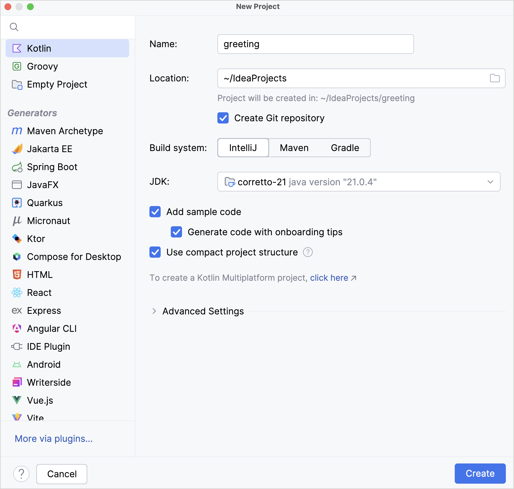
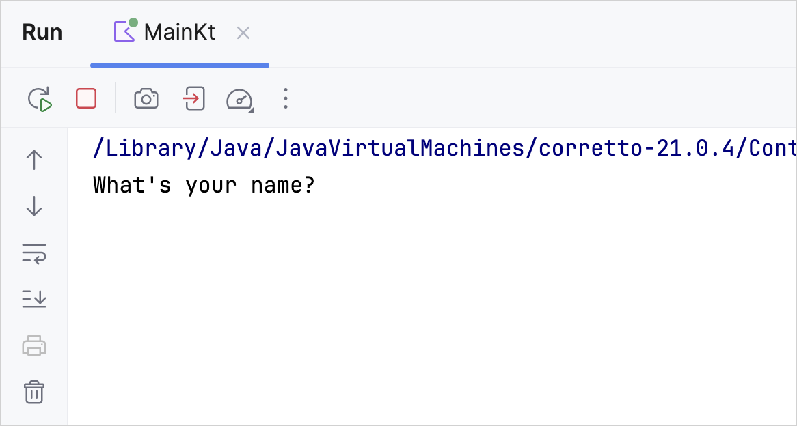

This tutorial demonstrates how to use IntelliJ IDEA for creating a console application.
To get started, first download and install the latest version of
IntelliJ IDEA
.
Create a project
In IntelliJ IDEA, select
File
|
New
|
Project
.
In the list on the left, select
Kotlin
.
Name the new project and change its location if necessary.

Select the
IntelliJ
build system. It's a native builder that doesn't require downloading additional artifacts.
If you want to create a more complex project that needs further configuration, select Maven or Gradle. For Gradle, choose a language for the build script: Kotlin or Groovy.
From the
JDK list
, select the
JDK
that you want to use in your project.
If the JDK is installed on your computer, but not defined in the IDE, select
Add JDK
and specify the path to the JDK home directory.
If you don't have the necessary JDK on your computer, select
Download JDK
.
Enable the
Add sample code
option to create a file with a sample
"Hello World!"
application.
Click
Create
.
Create an application
Open the
Main.kt
file in
src/main/kotlin
.
The
src
directory contains Kotlin source files and resources. The
Main.kt
file contains sample code that will print
Hello, Kotlin!
as well as several lines with values of the cycle iterator.
Modify the code so that it requests your name and says
Hello
to you:
Create an input prompt and assign to the
name
variable the value returned by the
readln()
function.
Let's use a string template instead of concatenation by adding a dollar sign
$
before the variable name directly in the text output like this –
$name
.
fun main() {
println("What's your name?")
val name = readln()
println("Hello, $name!")
// ...
}
Run the application
Now the application is ready to run. The easiest way to do this is to click the green
Run
icon in the gutter and select
Run 'MainKt'
.
You can see the result in the
Run
tool window.

Enter your name and accept the greetings from your application!
Congratulations! You have just run your first Kotlin application.
What's next?
Once you've created this application, you can start to dive deeper into Kotlin syntax: